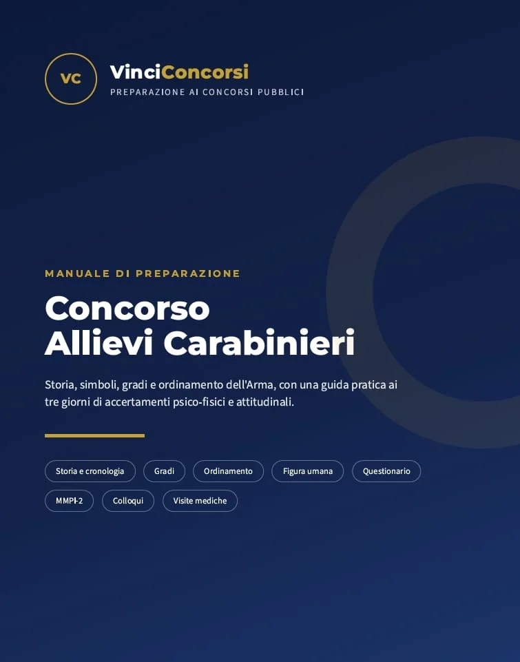
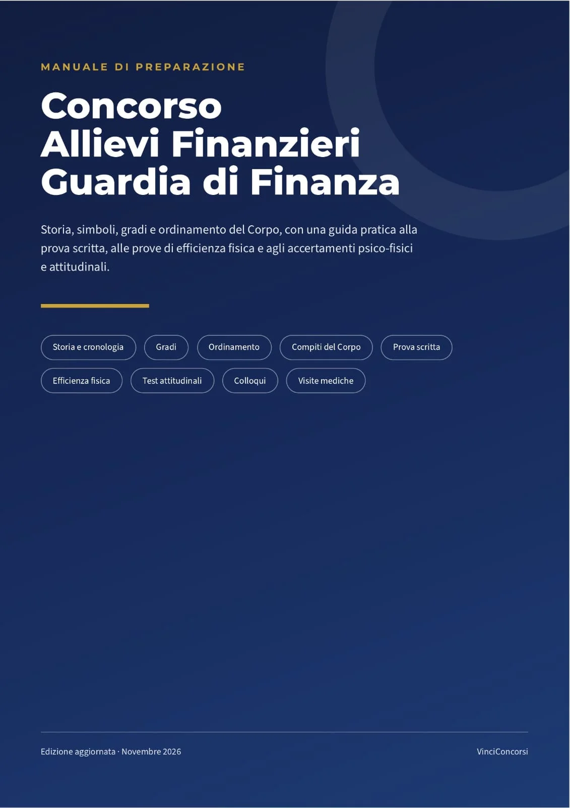
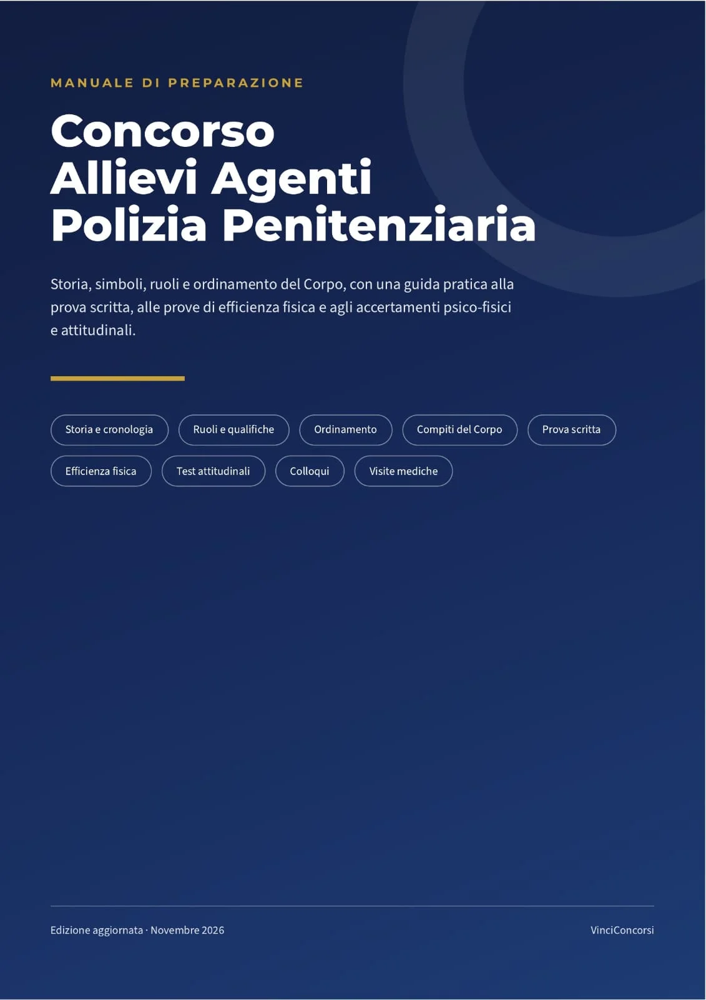

Preparazione ai concorsi
Il tuo futuro. Il tuo impegno. Il prossimo passo.
Preparazione personalizzata ai test psico-attitudinali e al colloquio con la commissione esaminatrice. Per Carabinieri, Polizia di Stato, Guardia di Finanza e Polizia Penitenziaria — al primo concorso o a un nuovo tentativo.
Guarda la presentazione
- Test psico-attitudinali
- Colloquio con la commissione
- Quattro percorsi
Orientamento
Due scelte, un messaggio già pronto.
Indica percorso e necessità: il pulsante apre WhatsApp con la richiesta giusta. Puoi cambiarla prima di inviare.
Percorsi
Da dove vuoi iniziare?
Quattro ambiti, un solo punto di partenza: capire dove vuoi arrivare. I percorsi sono di Vinciconcorsi e non sono canali ufficiali dei Corpi.
- 01 Carabinieri Il percorso con il manuale attitudinale già disponibile. Informazioni su test, colloquio e materiali. Esplora il percorso
- 02 Polizia di Stato Preparazione ai test psico-attitudinali e al colloquio, con il manuale di preparazione già disponibile. Esplora il percorso
- 03 Guardia di Finanza Preparazione ai test psico-attitudinali e al colloquio, con il manuale di preparazione già disponibile. Esplora il percorso
- 04 Polizia Penitenziaria Preparazione ai test psico-attitudinali e al colloquio, con il manuale di preparazione già disponibile. Esplora il percorso
Concorsi e prove effettivamente coperti sono in fase di definizione.
Il metodo
Non solo cosa sai.
Come ti racconti.
I test psico-attitudinali e il colloquio non chiedono solo nozioni. Chiedono di mostrare come ragioni, come scegli e come racconti il tuo percorso. È da qui che parte la preparazione.
-
01
Test psico-attitudinali
Allenare la lettura delle situazioni, riconoscere il proprio modo di decidere e arrivare alla prova con più consapevolezza.
-
02
Colloquio con la commissione
Il colloquio è una conversazione: si prepara il racconto di sé, non soltanto le risposte.
-
03
Perito selettore
Un passaggio in cui conta la lucidità con cui presenti le tue ragioni e il tuo percorso.
«Introspezione personalizzata»: è così che Salvatore descrive il proprio approccio.
Primo concorso o nuovo tentativo: si parte da come sei arrivato fin qui.
Manuali
Quattro manuali, un metodo.
Un manuale per ogni percorso, in PDF, con la stessa impostazione: storia e ordinamento del Corpo, prove e accertamenti. Prezzo e disponibilità si concordano su WhatsApp.
-

Carabinieri
Manuale attitudinale Allievo Carabiniere
Storia, simboli, gradi e ordinamento dell'Arma, con una guida ai tre giorni di accertamenti psico-fisici e attitudinali.
Acquista su WhatsApp -

Guardia di Finanza
Manuale di preparazione Allievo Finanziere Guardia di Finanza
Storia, gradi e ordinamento del Corpo, dalla prova scritta alle prove di efficienza fisica e agli accertamenti psico-fisici e attitudinali.
Acquista su WhatsApp -
Polizia di Stato
Manuale di preparazione Allievo Agente Polizia di Stato
Storia, ruoli e ordinamento della Polizia di Stato, dalla prova scritta alle prove di efficienza fisica e al colloquio con la commissione.
Acquista su WhatsApp -

Polizia Penitenziaria
Manuale di preparazione Allievo Agente Polizia Penitenziaria
Storia, ruoli e ordinamento del Corpo, dalla prova scritta alle prove di efficienza fisica e agli accertamenti psico-fisici e attitudinali.
Acquista su WhatsApp
-
01
Scrivi su WhatsApp
Chiedi indice, prezzo e disponibilità del manuale che ti interessa.
-
02
Concorda i dettagli
Pagamento tramite bonifico; tempi e modalità si definiscono in conversazione.
-
03
Ricevi il PDF
Il file arriva nella stessa chat. Nessuna spedizione.
Prezzo comunicato solo su WhatsApp. La copertina mostrata è quella dell'edizione aggiornata a novembre 2026.
Video
I contenuti vivono sui canali.
La presentazione in apertura spiega in meno di un minuto come funziona la preparazione. Qui quattro approfondimenti: come si preparano test e colloquio, i sei criteri del perito selettore, cosa guarda la commissione e l'analisi individuale del profilo.
Alcuni contenuti sono riservati e non vengono pubblicati qui.
Recensioni
Le parole di chi c'è passato.
Racconti reali di chi ha affrontato il percorso. Pubblichiamo anche gli esiti, quando i candidati scelgono di raccontarli: un esito positivo non è una promessa per nessuno.
Nessun risultato è garantito: le recensioni raccontano esperienze personali.
Community
Quattro gruppi, un confronto.
L'ingresso è su richiesta e viene approvato dal preparatore. Prima di entrare si accettano le regole del gruppo.
-
Community 01
Gruppo Carabinieri
Community di Vinciconcorsi, non canale ufficiale del Corpo.
Richiedi accesso -
Community 02
Gruppo Polizia di Stato
Community di Vinciconcorsi, non canale ufficiale del Corpo.
Richiedi accesso -
Community 03
Gruppo Guardia di Finanza
Community di Vinciconcorsi, non canale ufficiale del Corpo.
Richiedi accesso -
Community 04
Gruppo Polizia Penitenziaria
Community di Vinciconcorsi, non canale ufficiale del Corpo.
Richiedi accesso
L'accesso non è automatico: la richiesta viene valutata.
Domande
Prima di scrivere.
Le risposte che possiamo dare oggi, senza inventare dettagli.
01Come si acquista un manuale?
Si scrive su WhatsApp: si concordano prezzo e disponibilità, il pagamento avviene tramite bonifico e il PDF viene inviato nella stessa conversazione.
02Il manuale è cartaceo?
No. I materiali sono in formato PDF: non c'è nessuna spedizione.
03Posso vedere il contenuto prima di acquistare?
Puoi chiedere l'indice dei manuali su WhatsApp. L'anteprima disponibile è l'indice, non il testo completo.
04Come si entra in un gruppo?
La richiesta si fa su WhatsApp. L'ingresso è soggetto ad approvazione e all'accettazione delle regole del gruppo.
05Ho già provato un concorso: è comunque il posto giusto?
Sì. Il percorso è pensato anche per chi riprova: si riparte da cosa non ha funzionato, non da zero.
06Quanto costa il manuale?
I prezzi si comunicano su WhatsApp, insieme a indice e modalità di pagamento: restano aggiornati e non vengono pubblicati sul sito.
07In quanto tempo ricevo il PDF?
Dopo il bonifico il PDF viene inviato nella stessa conversazione WhatsApp. I tempi si concordano prima dell'acquisto.
08È adatto al concorso che sto preparando?
I percorsi coprono Carabinieri, Polizia di Stato, Guardia di Finanza e Polizia Penitenziaria. Per ogni corpo è disponibile un manuale di preparazione: indice e prezzo si chiedono su WhatsApp.
Contatto
Il primo passo?
Parliamone.
Informazioni, manuali o accesso ai gruppi: scrivi su WhatsApp.
Scrivi su WhatsApp- Risponde
- Salvatore
- Orari
- Tutti i giorni, 16:00–21:00
- Risposta
- In genere entro qualche ora
Il pulsante apre WhatsApp con un messaggio già pronto. I dettagli si concordano in conversazione.